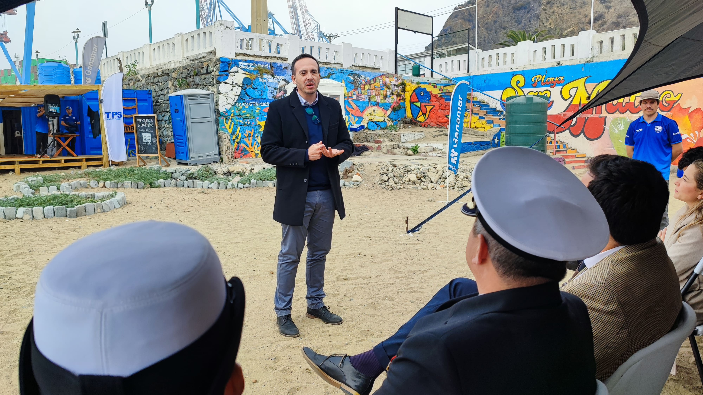
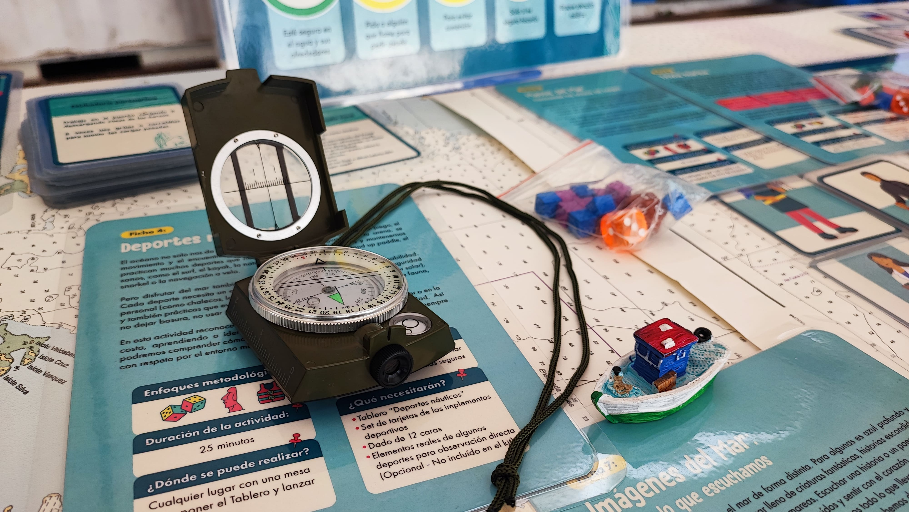
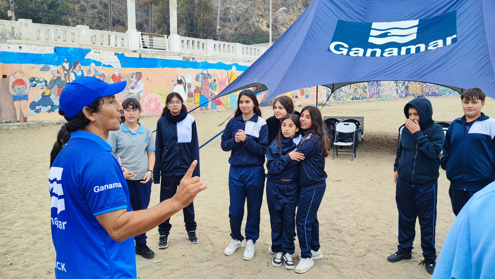
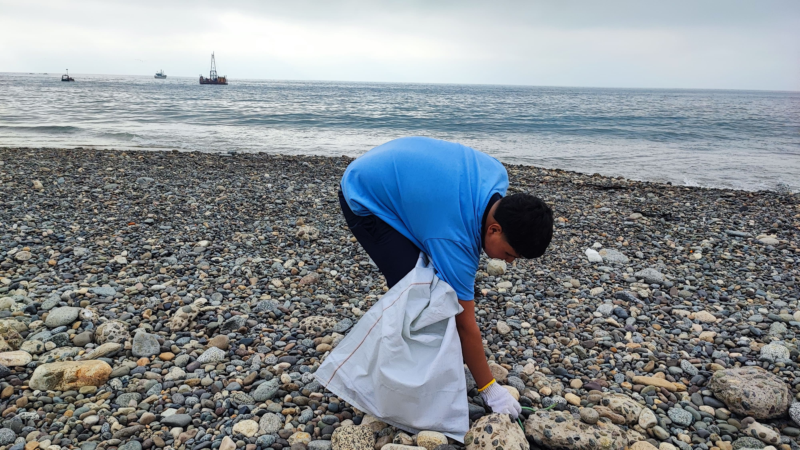

SLEP Valparaíso y Ganamar presentan kit pedagógico con inspiración marítima
Lanzamiento fue realizado en la Playa San Mateo, oportunidad en que se destacaron las bondades de trabajar en alianza de instituciones públicas y privadas.

"Elevar el estado de conciencia de lo que significa el cuidado del medio ambiente". Esta reflexión del director ejecutivo de SLEP Valparaíso, Claudio Sepúlveda, resume el ánimo de una ocasión especial: el relanzamiento, en plena playa San Mateo, de un kit pedagógico de cultura oceánica, que generó Ganamar —parte de la Fundación Acción Azul— para trabajar con los estudiantes de la educación pública.
El plan incluye el conocimiento de la cultura marina, desde fuera del agua, pero también clases de SUP. Una notable iniciativa que une de la mejor forma al mundo público con el privado.
"La mirada de SLEP es con foco de formación integral: capacitar profesores, pero también crear actividades lúdicas para que los estudiantes participen en lo físico y también en lo cognitivo acercando el currículum al borde costero."

Ana González, directora de proyectos de Ganamar, explicó cómo el encuentro con el SLEP transformó el proyecto original.
"En algún momento nos acercamos al SLEP y trabajando con niños que vienen del colegio cambió nuestro proyecto original, nos dimos cuenta que había una necesidad educativa importante respecto a la innovación de proyectos medioambientales ligados al océano."

Desde quienes apoyan a Ganamar, Franco Gandolfo, gerente general de Puerto Valparaíso, destacó la importancia de que la comunidad conozca el mar.
"Valparaíso requiere que las personas que vivimos aquí conozcamos el mar. Queremos que esto se empiece a masificar en los colegios."
En tanto, Fernanda Rehbein, de TPS, valoró la alianza público-privada y señaló que "lo que pasa con Ganamar es lo que pueden hacer los niños con programas que permiten aprender de deporte y cultura oceánica".
Kevin Araya, coordinador deportivo de SLEP y docente del Colegio México, destacó el trabajo conjunto que hace posible estas jornadas.
"Es un agrado incentivar a profes y directores a integrarse a estas actividades, porque es un esfuerzo conjunto para traer a los niños a jornadas de cultura oceánica y a practicar en SUP. Los chiquillos lo disfrutan mucho."

Finalmente, los propios estudiantes dejaron ver su entusiasmo. Johandry Colmenares, de 8° básico del Juan José Latorre, consideró que "la actividad es entretenida", mientras que su compañero Dylan Molina agregó: "Está bien ayudar en la limpieza de la playa. Ojalá no tiren más basura".